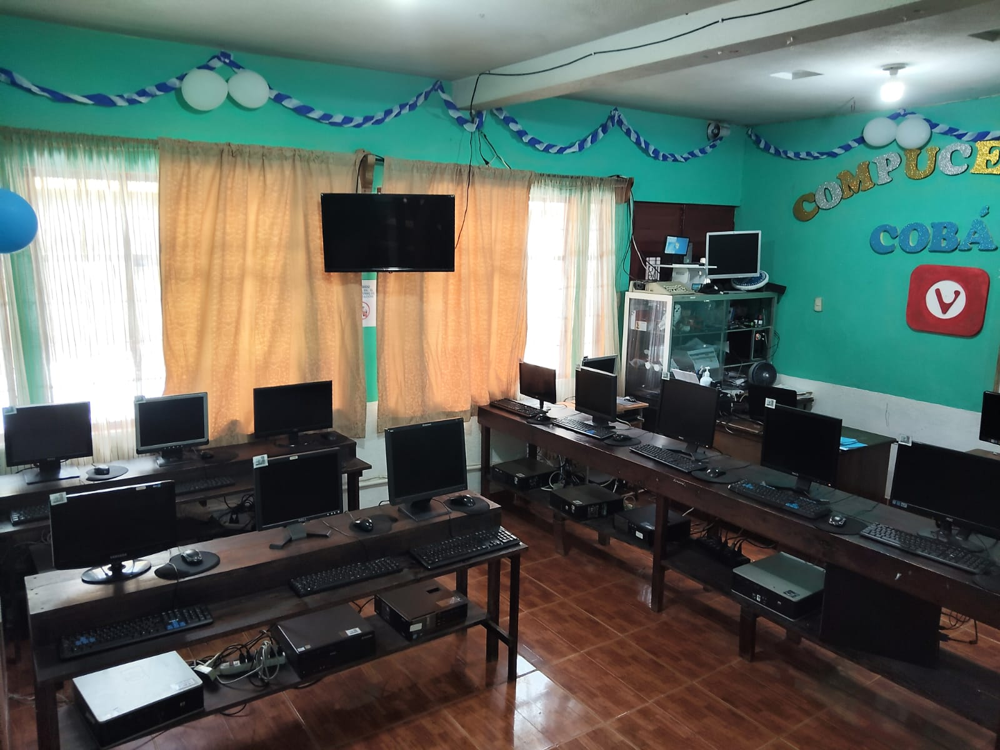

Nuestras Instalaciones


Formando líderes tecnológicos con excelencia, innovación y compromiso.
Convertir nuestros servicios de apoyo educacional, en un estándar de la educación informática, haciendo de Compucentro, la marca líder en textos de Computación, así como en una empresa sólida y confiable llevando el mayor beneficio a nuestros clientes.
Fortalecemos el proceso educativo en el área de la informática para niños y jóvenes a través de nuestros cursos de computación tenemos un enfoque hacia el aprendizaje práctico y dinámico, poniendo a la disposición de los establecimientos educativos: asesorías brindas por docentes y herramientas necesarias para soporte a sus actividades educativas.
CompuCentro abrió su academia en Cobán en 2012 y recientemente cumplió 13 años de funcionamiento. Desde entonces, se ha dedicado a la enseñanza de la computación con el objetivo de formar a niños, jóvenes y adultos en el uso de la tecnología.
Actualmente ofrece carreras técnicas como Técnico Operador en Computadoras, Técnico en Mantenimiento y Reparación de Computadoras y Técnico en Diseño Gráfico. También se encuentra el curso Tecnología del Aprendizaje y la Comunicación (TAC), dirigido a estudiantes de nivel básico, además de cursos especializados como Photoshop, paquete de Office y un curso vacacional para niños.
La academia cuenta con un equipo docente calificado y recursos tecnológicos que se adaptan a las necesidades académicas de la región. Su compromiso es brindar educación práctica y actualizada, acompañada de valores como responsabilidad, trabajo en equipo y atención cercana a los estudiantes.